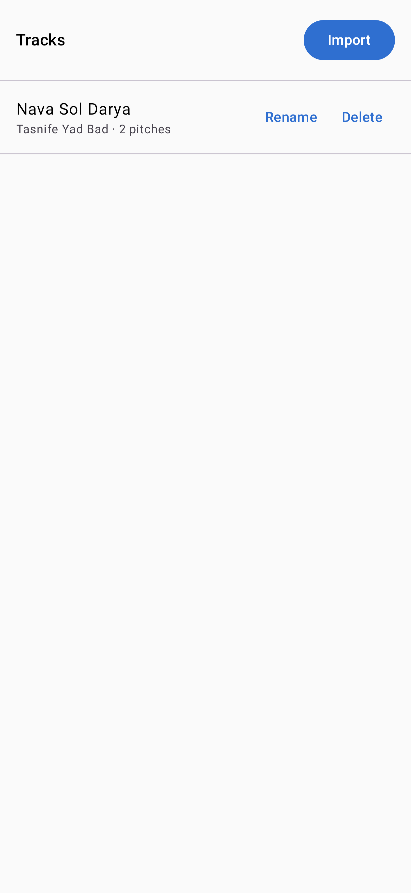
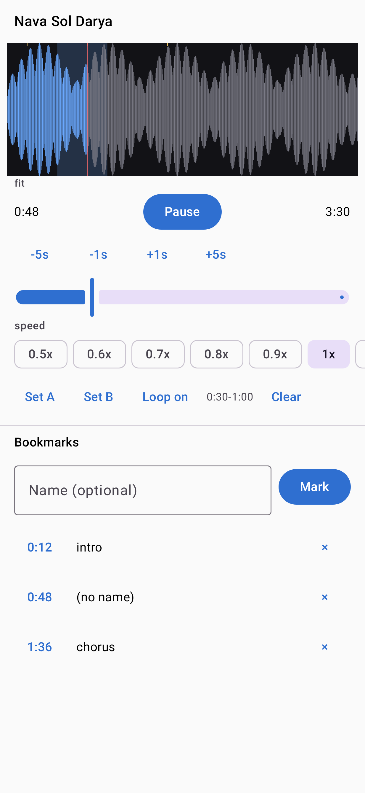
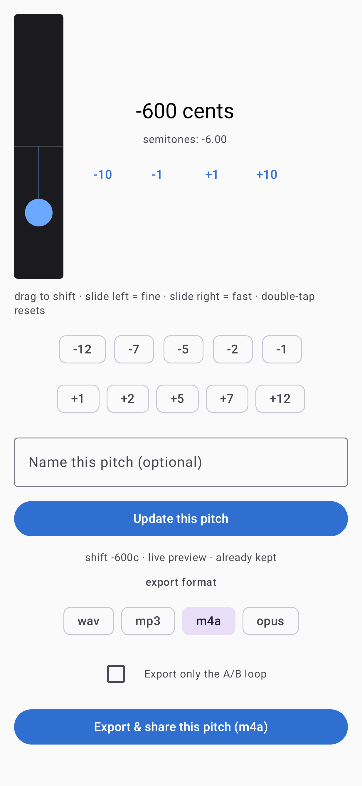
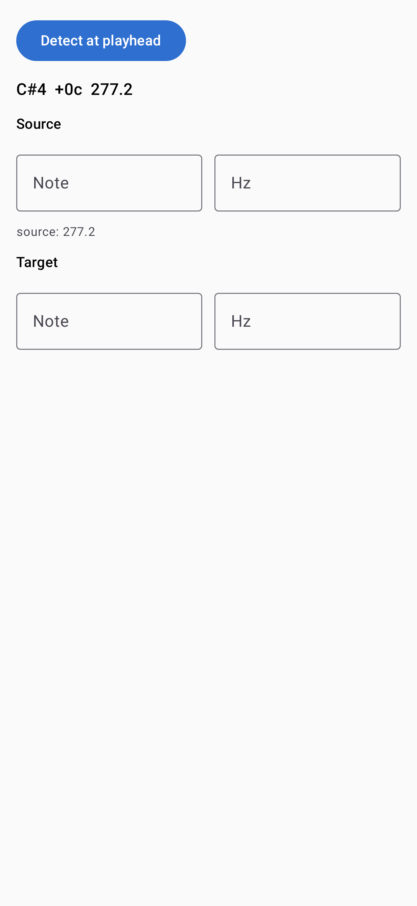
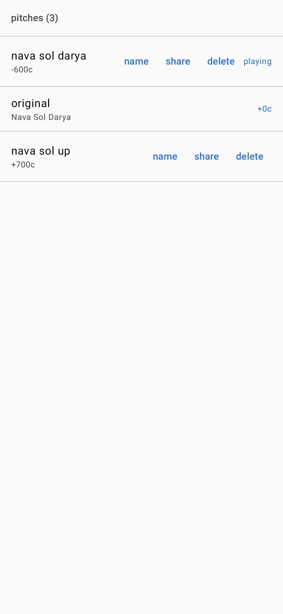

Transpose audio by any interval, without changing the tempo.
Move a piece up or down by semitones, cents, or a fraction of a semitone, keep the formants so voices still sound natural, detect the exact note at a point in the track, and keep a shelf of pitch variants per source. Free and open source, no accounts, no tracking.
Three ways to use it
Same engine, same note math, three front ends.
Desktop CLI
A single Rust binary. Shift files, detect notes, keep a shelf of variants, and export, all from the terminal. Works on local files and on audio fetched with yt-dlp.
Build and run →Local web UI
A browser interface with a waveform, a vertical pitch fader, a tuner, and a variants shelf. It runs on your machine next to a small Rust server, so your audio never leaves the computer.
See the web UI →Android app
Fully offline. Import audio or video (only the audio is kept), or share a file in from another app. Precise touch seeking, live pitch preview, and export to WAV, MP3, M4A, or Opus.
See the app →Features
- Shift by cents or semitones, including fractional amounts
- Formant preservation so vocals stay natural
- Monophonic tuner: find the exact note at a point
- Manual note and frequency entry, with target note or Hz
- Keep every pitch you like, sorted by how far it shifted
- Live preview: pitch moves while tempo stays fixed
- Section loop and playback speed from 0.5x to 2x
- Bookmarks on the waveform
- Export to WAV, FLAC, MP3, Ogg, or M4A
- Runs offline, no accounts, no telemetry
Android app
Native Kotlin and Jetpack Compose. It requests no network permission and bundles no downloader, so it is offline by design. Download it from the releases page and sideload the APK.





Install
Android
Download pitcher-android-*.apk from the
releases page
and open it on your device. Android will ask you to allow installing from
this source. Requires Android 10 or newer.
Desktop (CLI and web UI)
Requires Rust, Node, and the audio tools below.
# system dependencies (Debian/Ubuntu)
sudo apt install rubberband-cli librubberband-dev aubio-tools libaubio-dev ffmpeg yt-dlp
# build the CLI and server
cargo build --release
# the pitcher binary
./target/release/pitcher pitch in.wav out.wav --cents -100 --formant
./target/release/pitcher detect in.wav --at 12.3
./target/release/pitcher add in.wav --title "My Track"
# the web UI (builds the frontend, picks a free port, opens the browser)
./scripts/pitcher-web.shWeb UI
The web UI is a local app: it needs the Rust server and ffmpeg, Rubber Band, aubio, and yt-dlp on the same machine. See the web UI page for details and screenshots.
About
pitcher is free software under the GPL-3.0-or-later license. The shift engine is the Rubber Band Library, the tuner is YIN, and the whole thing is built to run offline. Downloading audio from streaming services is subject to those services' terms; use it only for audio you have the right to process.